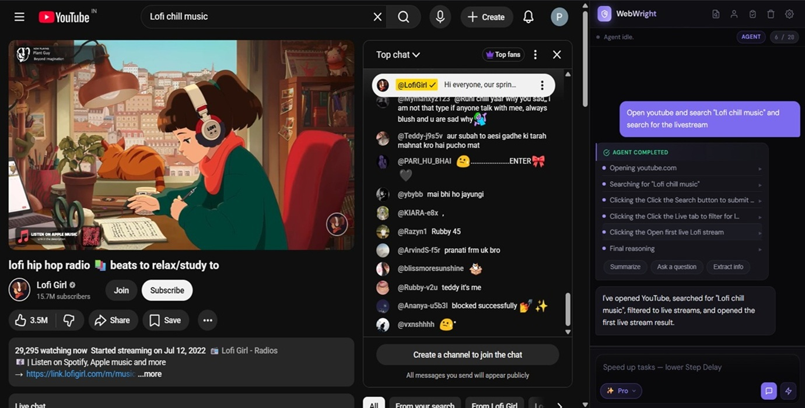
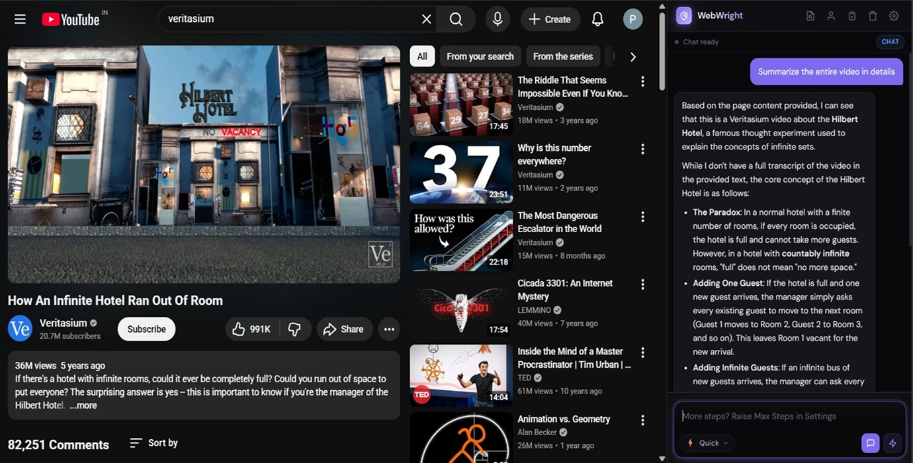
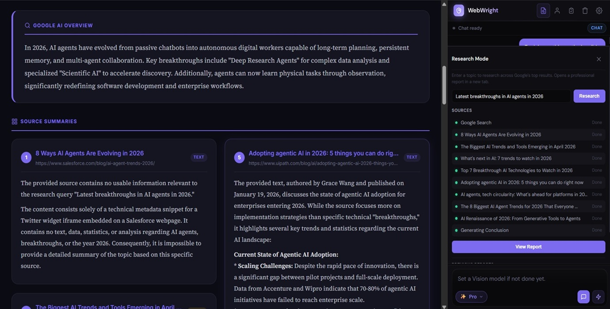
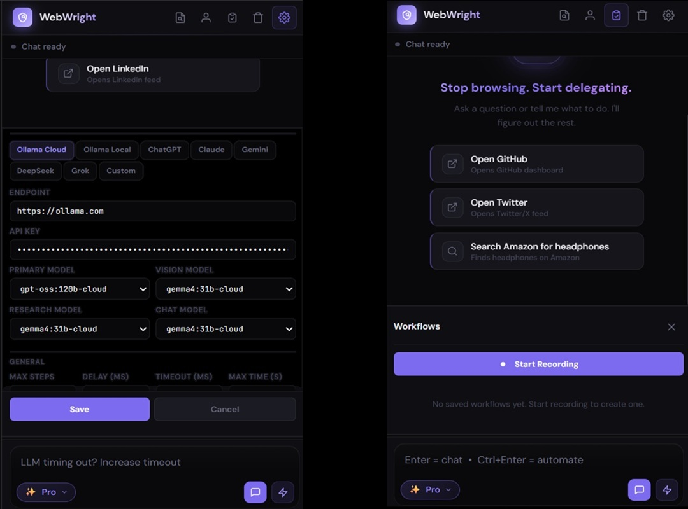

An autonomous AI agent that lives in your browser sidebar — sees web pages, reasons about them, and takes real actions to complete tasks for you.
Tell it what you want. Watch it work.
Most AI tools talk. WebWright works. Every popular AI sidebar is fundamentally a chatbot — it reads what you paste, answers questions about what you describe, and then stops. It can't reach the real browser tab where you're trying to get things done.
WebWright is different. It perceives the page, reasons about it with an LLM, and takes real actions — clicks, types, navigates, fills forms, conducts research. It is not a chat wrapper. It is a real agentic AI.
Most "AI sidebars" are ChatGPT inside a panel. They read pages, answer questions, and stop. WebWright crosses the line into action — and stays open-source, server-free, and yours.
| Typical AI Sidebar | WebWright | |
|---|---|---|
| Reads page content | ✓Yes | ✓Yes |
| Chats about the page | ✓Yes | ✓Yes |
| Takes real actions on your behalf | ✗No | ✓Yes — clicks, types, navigates, fills |
| Open source — read every line of code | ✗Rarely | ✓MIT-licensed on GitHub |
| Free, with a fully on-device option | ✗Usually paid | ✓Free; Ollama Local = $0 |
| Your data stays on your device | ✗Routed via dev server | ✓No server exists |
| Zero telemetry, analytics, tracking | ✗Typical | ✓None — verifiable in source |
| Provider freedom (bring your own key) | ✗Locked to one LLM | ✓8 providers, any model |
Give the agent a goal in plain English. It navigates, clicks, types, fills forms, and reports back — across multiple pages and steps — while you watch every action in a live log.

Ask questions about the article, dashboard, or video page you're viewing. Multi-turn conversation with full page context. Two intelligence levels at one click.

Enter a topic. WebWright opens Google, captures the AI Overview, visits the top 10 organic sources, summarizes each one, and synthesizes a final cross-source conclusion. A polished HTML report opens in a new tab.

Repetitive tasks become one-click replays. Personal info you save locally fills forms on demand. Eight providers in Settings, every model field editable — switch any time.
chrome.storage.local — never seen by us
Most agentic extensions stay at DOM analysis and fail when pages deviate from their assumptions. WebWright climbs a 4-tier ladder until it gets unstuck.
Eight LLM providers supported out of the box. Every model field is editable so new releases work the day they ship. Use a frontier model where reliability matters; a cheap fast one where speed matters more.
There is no developer-controlled server. No telemetry. No analytics. No data sharing with any third party. The local-first architecture is structural, not policy — there is nothing on our side to collect data even if we wanted to.
chrome.storage.local, sandboxed per-extension and encrypted at rest.Read the full policy: Privacy Policy & Permission Justifications →
A complete guide to getting WebWright running and getting good results out of it. Skim the table of contents, jump to what you need.
WebWright runs on every Chromium-based browser — Chrome, Microsoft Edge, Brave, Opera, Vivaldi, and Arc.
git clone https://github.com/profoncode-debug/WebWrightchrome://extensions/, edge://extensions/, etc.).Open Settings (gear icon, top-right of the sidebar). WebWright supports 8 LLM providers, each on its own tab:
You can configure four separate models per provider so the right model handles each job:
gpt-oss:120b-cloud for agent + gemma4:31b-cloud for vision/research. Or Gemini 2.0 Flash for everything if you have a free Google AI Studio key.Agent Mode is for tasks where the agent must do things — navigate, click, type, fill forms, complete multi-step flows.
Max Steps actions (default 20) or Wall Timeout seconds (default 300).Chat Mode answers questions about the page you're currently viewing. Multi-turn conversation, full page context.
Use the mode pill above the input to choose:
Your choice is remembered across sessions. Switch any time.
Research Mode autonomously visits up to 10 sources on the web and synthesizes a final report. Ideal for "research X for me" requests.
The drawer shows live per-source status: active · done · error · skipped.
gemma4:31b-cloud). Other providers fall back to your primary model.Workflows record a sequence of browser actions (clicks, typing, navigation) once, then replay them with a single click. Best for repetitive tasks where the actions are identical every time.
Save your details once. The agent uses them to fill forms on demand — only when you explicitly ask for a form-related task.
chrome.storage.local, never sent anywhere unless the agent uses it for a form fill.Only when your goal contains form-related keywords like: fill, form, complete, enter, register, signup, apply, application, checkout, booking, my name, my address, my info, etc.
If the keyword check doesn't match, the vault is never added to the LLM prompt — for example, "summarize this article" or "research Hanta virus" will never include your personal info.
Only Agent Mode + keyword match = vault sent.
When DOM-based actions fail, WebWright automatically climbs a 4-tier ladder. You don't trigger this manually — the agent escalates on its own when it detects it's stuck.
The agent also has anti-loop detection: if it repeats the same action three times, oscillates between two elements, or detects that a step claimed success but the page state didn't change, it changes strategy or escalates.
Open the gear icon in the side panel header.
The accuracy of any AI agent is a function of two things you control: how specifically you prompt it, and which model you point it at.
Your API key is missing, invalid, or has been rate-limited. Fix:
Ollama is blocking the extension's origin. Set the environment variable OLLAMA_ORIGINS=* and restart Ollama.
The agent's anti-loop detection usually catches this. If it doesn't:
The vault is only sent when your goal includes form-related keywords. Try rephrasing: "fill this form with my saved info" instead of "do this for me."
Some sites are slow or block bots. The 60-second per-source hard cap will skip them and move on. If many sources fail, switch to a faster Research Model or try a more specific topic that surfaces less spammy sources.
Click the puzzle icon in your browser toolbar → pin WebWright. Then click its icon directly.
Open-source, under 1 MB, runs on every Chromium browser. Bring your own API key, or run fully local with Ollama.
Add to Chrome — it's free